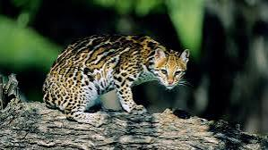

Aguila Arpia
El águila arpía es una especie en peligro de extinción, de cuyos ejemplares se tienen muy pocos registros en las selvas de Chiapas y los pocos antecedentes de avistamientos están en la Selva Lacandona.
Las dimensiones promedio de la hembra de la arpía mayor son 100 cm de largo, 200 cm de envergadura (distancia entre los extremos de las alas) y un peso medio de 7.35 kg. El macho tiene dimensiones más pequeñas: hasta 196 cm de envergadura y un peso aproximado de 5.95 kg. Los adultos de ambos sexos tienen el mismo color de plumaje y consiste en tres tonalidades básicas: gris en la cabeza; gris muy oscuro, casi negro en algunos ejemplares, en la doble cresta en la cabeza, el cuello, parte superior del cuerpo y de las alas; y gris muy claro, casi blanco, en la parte inferior del cuerpo y de las alas. En las patas tiene unas líneas oscuras. En la cola tiene franjas del gris oscuro y del gris muy pálido. El pico es gris muy oscuro. La piel en las patas es amarilla clara. Las uñas son de color gris muy oscuro. Posee un pico fuerte y garras que pueden alcanzar los 15 cm de largo.
Ocelote
El Ocelote es un felino nocturno, extraordinariamente reconocible por su coloración: una combinación entre rayas y rosetas oscuras sobre fondo amarillento. Similar al Margay (otro felino del bosque) es sin embargo de mayor tamaño (puede alcanzar el metro de longitud, así como los 16 kilogramos de peso). Su nombre (“ocelotl”) procede del náhuatl, la extinta lengua que hablaban los aztecas. La cola, que puede alcanzar los 45 centímetros, le sirve para mantener el equilibrio. Se trata de animales muy territoriales cuyos enfrentamientos se han saldado, en ocasiones, con la muerte.
Una de sus características es que trepa excelentemente, lo cual le ayuda a encontrar presas en los árboles, normalmente pequeños monos; aunque también se mueve con soltura por el suelo espeso, acechando a venados de menor tamaño, roedores (paca, agutí) o invertebrados, amén de iguanas, ranas y tortugas. Suele alzarse sobre sus patas traseras para inspeccionar el terreno.
Una de sus características es que trepa excelentemente, lo cual le ayuda a encontrar presas en los árboles, normalmente pequeños monos; aunque también se mueve con soltura por el suelo espeso, acechando a venados de menor tamaño, roedores (paca, agutí) o invertebrados, amén de iguanas, ranas y tortugas. Suele alzarse sobre sus patas traseras para inspeccionar el terreno. Se estima que los ocelotes crían cada dos años. La reproducción de esta especie americana comienza cuando se alcanza la madurez sexual, a los 24 meses. Las hembras paren de uno a cuatro cachorros, después de un período de gestación que va de 70 a 85 días.
